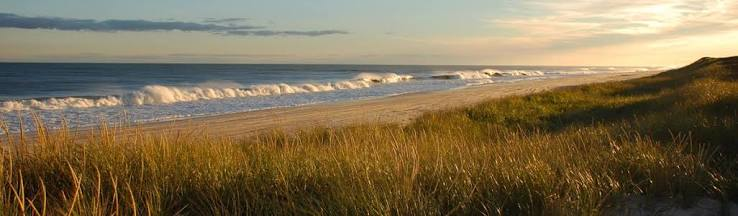
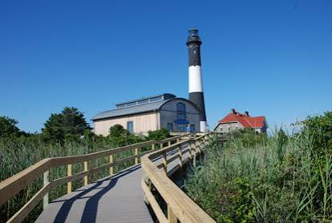
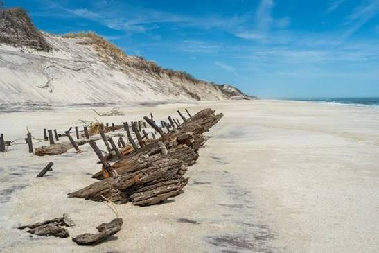
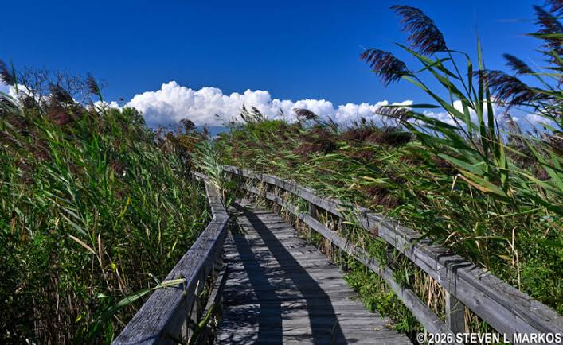
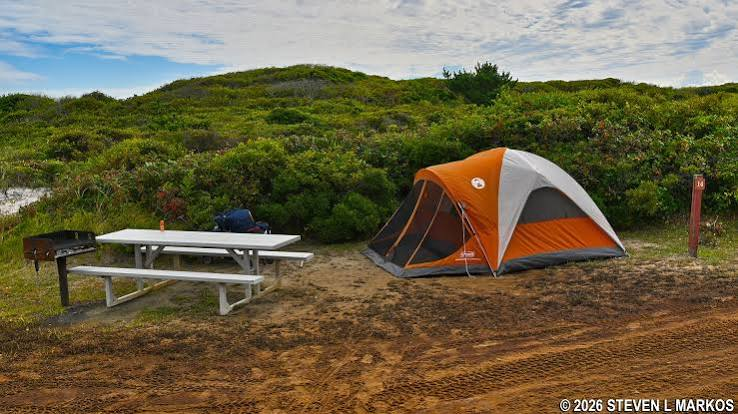

The Fire Island Lighthouse was one of the most memorable landmarks I visited. Standing along the coast, the historic lighthouse offers beautiful views of the surrounding Atlantic Ocean and gives visitors a glimpse into the island's maritime history.
The Sunken Forest at Sailors Haven was one of the most unique places I explored. A boardwalk winds through an ancient maritime forest, with trees growing among the surrounding sand dunes. It felt surprisingly different from the open beaches nearby.
The beaches were definitely one of the main highlights of my trip. The long stretches of soft sand and Atlantic Ocean made the area perfect for swimming, relaxing, walking along the shoreline, and simply enjoying the scenery.
For a more adventurous experience, I explored the Otis Pike Fire Island High Dune Wilderness. It is a largely undeveloped area of dunes, forests, and wetlands where I could experience Fire Island's natural environment with very little development around me.
Fire Island is also home to a variety of plants and wildlife. As I explored the island, I could appreciate its dunes, wetlands, forests, and coastal habitats, which provide important environments for birds and other wildlife.
Another interesting part of the visit was exploring the small communities scattered along the island. Places such as Ocean Beach have a very different atmosphere from the wilderness areas, with restaurants, shops, homes, and pathways connecting the community to the surrounding beach.
The William Floyd Estate offered a completely different side of the trip. The historic property preserves the home and grounds associated with William Floyd, one of the signers of the United States Declaration of Independence, giving visitors an opportunity to experience some of the area's history.
Beyond the individual attractions, simply being surrounded by the Atlantic Ocean was an experience in itself. Walking along the coastline, hearing the waves, and seeing the dunes stretching into the distance gave me some of my favorite moments from the trip.




I would definitely encourage anyone who enjoys nature, beaches, and exploring new places to visit Fire Island. What I enjoyed most about my visit was being able to experience so many different things in one destination. I could spend time on the beach, walk through the forest, admire the lighthouse, and enjoy the peaceful surroundings without feeling like I was in a busy city. The scenery also provided plenty of opportunities to take photographs and appreciate the natural environment. I particularly enjoyed the contrast between the wide sandy beaches and the dense greenery of the Sunken Forest. Fire Island gave me a chance to slow down, explore, and experience a completely different environment from my everyday surroundings. If you are looking for a place where you can relax, explore nature, learn some history, and create memorable experiences, Fire Island is definitely a place I would recommend visiting.
Link to Fire Island National Park